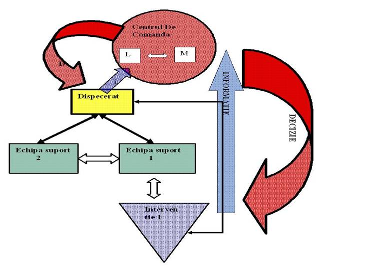

ASOCIATIA NATIONALA A SALVATORILOR MONTANI DIN ROMANIA
PROCEDURI ȘI TEHNICI DE BAZĂ ÎN SALVAREA MONTANĂ
Organizarea acţiunilor de căutare/salvare apersoanelor disparute sau ratacite
1 Caracteristici ale operatiunilor in functie de modul de primire al informatiilor
Desi la prima vedere pare banala si lipsita de spectaculozitate, gasirea, recuperarea si salvarea unor persoane ratacite reprezinta poate cea mai complexa operatiune derulata de echipele salvamont.
In functie de modul de primire a informatiilor la dispecerat ne confruntam cu doua situatii care genereaza la rindul lor mai multe moduri de operare:
Cazul A. Alarmarea directa definita prin faptul ca persoana/grupul de persoane contacteaza personal, prin numarul national de urgente 112 sau direct la dispeceratele salvamont solicitind asistenta. Trebuie precizat faptul ca H.G.77/2003 obliga toate serviciile salvamont sa mentina 24h/24 servicii de dispecerat.
Cazul B. Alarmarea indirecta definita prin faptul ca se efectuaza de catre terte persoane care pot fi rude, prieteni, colegi de serviciu sau in unele cazuri chiar alti turisti.
Desi ambele situatii genereaza cum am precizat anterior moduri de operare diferite, trebuie sa tinem cont de un lucru important, acela ca actiunea de cautare reprezinta o urgeta si trebuie tratata ca atare.
Operatiunea de cautare este o urgenta deoarece:
•Subiectul poate avea nevoie de ingrijiri de urgenta
•Subiectul poate avea nevoie de protectie impotriva factorilor de mediu sau chiar impotriva propriei persoane in cazul deteriorarii conditiei psihice (anexietate severa, fobii etc)
•Timpul si vremea distrug indiciile
•O reactie rapida usureaza dificultatea cautarii
•Subiectul poate fi comunicativ sau constient pentru un numar limitat de ore/zile
•O reactie rapida iti permite sa utilizezi mai eficient tehnicile de cautare
Este deseori greu de justificat o urgenta deoarece un mare procent din cazurile de persoane disparute, sub presiunea instinctului de autoconservare, reusesc printr-o deplasare continua sa se salveze si ajung in zone populate (case, stine, cabane). Chiar si asa un raspuns rapid limiteaza aria de cautare a echipei.
Teoretic, cu fiecare ora trecuta din momentul declansarii operatiunii, aria de cautare se mareste.
Cautarea propriu-zisa este de fiecare data o poveste plina de necunoscute in care toate indiciile asteapta sa fie descoperite.
Folosirea indiciilor in actiunea de cautare
Indiciile importante includ:
•Punctul initial (punctul de plecare a grupului/persoanei, locul unde a fost vazut ultima data, ultima pozitie cunoscuta)
•Destinatii posibile
•Recrearea circumstantelor
•Verificarea posibilitatii ca subiectul sa se fi intors acasa sau in alta locatie
•Intervievarea martorilor, familiei, prietenilor, colegilor de servici etc
•Conturarea profilului persoanei disparute
Din punct de vedere virtual este practic imposibil sa traversezi mediul inconjurator fara sa lasi urme (indicii): urme, mirosuri, materii biologice, diferite articole care indica prezenta omului intr-o anumita zona. Aceste indicii iti pot arata directia de mers, timpul, uneori chiar conditia subiectului (ex: ambalaje de medicamente, resturi de bandaje, urme de singe, resturi de alimente) si pot reduce considerabil aria de cautare.
Putem incerca sa catalogam aceste indicii dupa cum urmeaza:
•Indicii fizice: vehicule, obiecte, urme de pasi, materii organice etc
•Indicii umane: martori, prieteni, familia etc
•Indicii inregistrate: registre, jurnale de calatorie, bilete de calatorii, planning computerizat
•Indicii acustico-vizuale: foc, lumina unei lanterne, fum, diverse semnale acustice
•Indicii analitice: calculul probabilitatilor, profilul terenului, profilul subiectului
2 Alarmarea directa
In cazul A - alarmare directa - interogatoriul/culegerea de date pe care o face dispecerul are o importanta covarsitoare.
Toate datele trebuiesc consemnate in registrul de tura dupa cum urmeaza:
•Ora apelului
•Numele si prenumele intervievatului
•Zona in care se afla si folosirea criteriilor de evitare a confuziilor (ex: „deci spui ca esti in zona x”, „de la ce cabana ai plecat?”, „pe ce traseu?”, ‚ultimul marcaj intilnit?”)
•Persoana singulara sau grup
•Componenta grupului (barbati/femei, adulti/copii, tineri/batrini)
•Conditia grupului
•Daca exista accidentati/persoane in stare de epuizare
•Evaluarea starii accidentatului (se poate incerca o anamneza prin telefon)
•Conditii de mediu
•Resursele grupului
•Descrierea sumara a zonei unde se afla persoana/grupul
Odata cunoscute aceste date dispecerul declanseaza sistemul de interventie si informeaza seful serviciului/seful de tura sau responsabilul cu operatiunile.
Acesta evalueaza situatia bazindu-se pe informatii certe si stabileste in functie de zona si de conditiile meteo planul de operatiuni.
Este recomandat interzicerea contactului cu mass-media pina la terminarea operatiunii pentru a evita patrunderea persoanelor neinitiate si neautorizate in aria de cercetare, aglomerarea liniilor telefonice ale echipei ,alte intirzieri nejustificate. Ulterior se desemneaza un ofiter de presa care poarta responsabilitatea comunicatelor despre si legate de caz
Se aproximeaza timpul mediu de ajungere in zona unde se afla grupul. Pentru cresterea factorului psihologic acest timp se poate comunica persoanelor ratacite odata cu citeva recomandari obligatorii:
•Sa-si mentina pozitia actuala (cea declarata dispecerului)
•Sa emita semnale acustice sau luminoase
•Sa-si amenajeze un bivuac de supravietuire intr-un loc sigur (ferit de culoare de avalanse, caderi de pietre, descarcari electrice, caderi in gol etc)
•Sa se izoleze fata de sol
•Sa-si rationalizeze apa si alimentele si sa foloseasca telefoanele mobile progresiv si numai daca sunt solicitati de echipa de salvare sau dispecerat
•Ratiile pentru eventualii accidentati vor fi duble fata de ceilalti
•In nici un caz sa nu fractioneze grupul
Odata parcurse aceste etape operatiunea devine una clasica de salvare-evacuare caracterizata prin cele patru etape:
·LOCALIZARE - contactul vizual sau auditiv cu subiectii
·ACCES – se alege calea cea mai usoara si sigura pina la grup. Cea mai scurta cale de cele mai multe ori nu intra in criteriile mentionate.
·STABILIZARE - include prevenirea oricaror accidentari adiacente ulterioare, reabilitarea termica si rehidratarea subiectilor, primul ajutor calificat pentru eventualii accidentati
·EVACUARE/TRANSPORT – in funtie de situatie imbraca multe aspecte, de la simpla conducere (ghidare) spre prima cabana sau localitate, la evacuari dificile pe/sau in zone de pereti verticali, cu sortarea grupului in funtie de sansele reale de supravietuire ale fiecaruia
3 Structura echipelor de interventie
O actiune de acest gen necesita o structura binara a echipei formata din:
•Interventia 1
•Echipa de suport
Echipa Interventie 1 este formata din salvatori cu capacitate fizica deosebita si predispozitie la deplasari lungi in timp record. Acestia sunt dotati cu echipament ultrausor specific cautarii si localizarii victimei.
Echipa de suport pleaca in actiune ceva mai tirziu cu un mobil (auto) capabil sa tranporte echipament greu (targi, grup electrogen, corturi, alimente, tuburi de oxigen, tehnica de calcul si iluminat, echipamente de comunicatii). In functie de complexitatea cazului, organizeaza un punct de prim ajutor si supravietuire sau reabilitare, pregatit sa primeasca mai multe victime sau sa ramina in zona daca mobilele de transport nu sunt de ajuns decit pentru evacuarea grupului.
Echipa de suport pleaca in actiune ceva mai tarziu, cu un mobil (auto) capabil sa tranporte echipament greu (targi, grup electrogen, corturi, alimente, tuburi de oxigen, tehnica de calcul si iluminat, echipamente de comunicatii). In functie de complexitatea cazului, organizeaza un punct de prim ajutor si supravietuire sau reabilitare, pregatit sa primeasca mai multe victime sau sa ramana in zona daca mobilele de transport nu sunt de ajuns decat pentru evacuarea grupului.
4 Alarmarea Indirecta
In cazul B - alarmare indirecta - ne comfruntam cu o situatie mult mai complexa deoarece:
•Informatia primita de la terti este inexacta, bazata de cele mai multe ori pe supozitii
•Aria de cautare este foarte vasta si se refera de cele mai multe ori la masivi muntosi
•Factorul de timp este mare, de ordinul zilelor, alarmarea producindu-se in momentul in care subiectii nu se mai intorc acasa sau la serviciu
•Indicile MANUALUL SALVATORULUI MONTAN
fizice sunt estompate sau pot chiar disparea cu desavirsire, echipa trebuind sa se bazeze pe indiciile analitice si umane
Informatia initiala in acesta situatie este sau foarte complexa sau foarte saraca. Sunt insa citeva chestiuni certe care sunt importante de stiut imediat.
Dispecerul va trebui sa selecteze anumite informatii analitice pe baza carora coordonatorul operatiunii va trebui sa conceapa un plan de actiune complex.
Informatiile se pot sintetiza astfel:
•De cit timp lipseste victima? Seriozitatea si urgenta operatiunii creste direct proportional cu timpul aferent disparitiei victimei
•ACTIVITATI. Ce fel de activitati obisnuieste subiectul sa desfasoare in munte? (escalada, drumetie, zbor cu parapanta, schi tura, schi extrem, ATV etc). Aceste aspecte ne pot ajuta sa restringem ariile de cautare la zone specifice unor activitati. Cautarea initiala in teren va incepe cu acele zone.
•ECHIPAMENT. Aceste informatii sunt strins corelate cu activitatea pe care subiectul intentiona sa o desfasoare sau a desfasurat-o in zona.
•HAINE. Ce fel de haine si-a luat? Cu ce era imbracat si ce haine si-a luat in rucsac? Daca hainele pot conferi protectie termica si cit de mult ii afecteaza detectibilitatea.
•NUMARUL DE PERSOANE DISPARUTE. Exista o relatie invers proportionala dintre numarul de persoane si incidentele neplacute cu urmari grave. Teoretic, cu cit sunt mai multi intr-un grup cu atit sansele de a-i recupera mai repede si in siguranta cresc.
•VIRSTA. Cu cit media de virsta a grupului este mai scazuta apar probleme din cauza lipsei de experienta si a teribilismului. La grupurile cu medie de virsta mare pot aparea probleme generate de starea sanatatii, intreruperea unor tratamente medicamentoase etc.
•DESCRIERE FIZICA. Inaltime, greutate, culoare par, semne particulare etc
•CONDITIE FIZICA. De retinut faptul ca apartinatorii au tendinte de a raporta starea fizico-psihica a subiectilor subiectiv. Primul lucru care trebuie consemnat si luat in consideratie este legat de probleme medicale, psihice sau handicapuri ale victimei incluzind aici probleme de auz sau vorbit.
•EXPERIENTA/ABILITATI. Incepator/Avansat /Experimentat
•ULTIMUL PUNCT sau ULTIMA POZITIE CUNOSCUTA. Cu cit mai precis este aceasta informatie cu atit putem contura o zona de cautare. Daca avem informatia ca grupul a plecat cu o masina personala trebuie sa cerem imediat politiei sa identifice locul unde este parcata masina. In lipsa altei informatii vom considera acel lunct ca Ultima Pozitie Cunoscuta (UPC)
•TEREN. Cunoscins datele anterioare putem creiona analitic un tip de teren unde o sa incepem cautarea. Recomandat este ca cautarea sa inceapa din si in zonele cele mai usoare din punct de vedere al accesului. Ratacitii sub amprenta instinctelor de conservare vor evita zonele accidentate, peretii, canioanele si se vor orienta pe cit posibil spre zone din ce in ce mai joase.
•VREMEA. Este un alt criteriu de determinare al evolutiei unui prezumptiv ratacit si deasemena cu efecte defavorizante pentru operatiunea de cautare in sine. Vremea in zona montana poate evalua drastic de la o arie la alta. Intotdeauna verificati prognoza meteo a zonei si a zonelor invecinate inainte si in timpul interventiei!
Informatiile despre o persoana disparuta receptionate de la diferite surse asa cum am aratat anterimaniera inteligenta.or au un grad al acuratetii cu o variabilitate mare. Coordonatorul operatiunii poate avea propria idee bazata pe instinctul dezvoltat de experienta si cazuistica comparata, dar ceea ce este important la urma urmei este ca analiza tuturor datelor sa se faca cu calm si intr-o
Mai precizez ca evaluarea informatiilor initiale se imparte de obicei in trei grupe:
•Informatii Circumstantiale – informatia este in general fara caracter cert. Ex: o masina lasata in zona de plecare a unei poteci dar fara un semn sigur sau un indiciu ca persoanele au urmat acea poteca.
•Informatii second-hand – informatii care vin de la persoane care au receptionat informatia de la alte persoane si o transmit dispeceratului.
•Martori oculari – sunt pe departe cele mai valoroase si mai sigure informatii. Aceste persoane sunt capabile sa confirme ca cineva este cu adevarat ratacit/pierdut si ne pot furniza date cu care sa reconstituim scenariul care a dus la situatia de fact.
Combinatia acestor informatii de catre coordonatorul operatiunii, in procesul de evaluare a situatiei este ultimul process inainea definitivarii modului si a procedurii de interventie .
Ati observat desigur ca nicaieri nu am precizat ca in acst caz denumit B. este necesar o interventie rapida si trimiterea in teren a echipei de interventie1 a carei caracteristici de deplasare si mod de echipare le-am definit anterior. Acest lucru este inutil deoarece o echipa rapida de interventie se justifica atinci cind ai un targhet si niste coordinate foarte bine stabilite. Este un nonsense sa arunci oameni haotic in teren . Ei isi vor consuma resursele si iti vor lipsi sau vor avea un randament acazut tocmai cind vei avea mai mult nevoie de ei.
5 Arii de cautare
Dupa analizarea datelor vom stabili managementul operatiunii de teren.
Stabilirea ariei de cautare genereaza trei situatii .
•Area se afla in intregime in zona ta de competenta si atunci toate deciziile iti apartin operatiunea desfasurindu-se dupa modele si utilizind dotarea specifica a fiecarei centrale
•Area cuprinde mai multe zone de competenta ( ex. Bucegi /Fagaras/Retezat) si atunci ai obligatia de a conecta imediat omologii aferenti ariilor de competenta invecinate iar modul de operare trebuie sa fie rodul unei decizii commune . Ideal este crearea unui comandament unic al operatiunii direct in teren sau intr-o zona foarte aproape de aria desemnata.
•Area cuprinde zone transfrontaliere unde modul de operare trebuie sa se regaseasca in tratate de perteneriat bine stabilite
Operastiunea se desfasoara concentric din exteriorul ariei spre interior– se verifica locurile de cazare , parcarile si chempingurile , spitalele etc din imediata apropiere a zonei desemnate. Se verifica apoi toate locatiile din interiorul zonei hoteluri, cabane , pensiuni, stetii de cabina , case particulare stini si locasuri. Daca rezultatul este negativ se face un scurt brifing al actiunilor derulate care are ca scop evitarea omisiunilor .
Se formeaza echipe de maxim doi salvatori dotati cu comunicatii si aparatura GPS. Se stabilesc careuri(griduri) de cautare incepind din zonele cele mai accesibile .
Fiecare echipa va primi de la dispecerat harta detaliata a careului pe care trebuie sa-l cerceteze . Dispecerul va trebui sa urmareasca intreaga desfasurare si sa atentioneze echipele daca au iesit sau s-au indepartet de careul stabilit . Pentru o coordonare perfecta , daca serviciul nu are sistem de urmarire a trackului in timp real se recomanda o comunicare radio a coordonatelor la fiecare 15 min/echipa.
Disciplina in reteaua de comunicatii trebuie mentinuta foarte srict . Ordinea de comunicatii este intodeuna de la echipa A la echipa X pentru a se evita omisiunile.
La fiecare 6 ore se face o reevaluare a situatiei . Cautarea nu trebuie oprita pe timpul noptii decit daca evaluarea factorilor de risc o impun. Noaptea iti aduce de obicei o multime de dezavantaje dar si un mare avantaj . Orice semnal luminos, lanterne , foc , racheta de semnalizare este obsevata si localizata de la mare distanta. Se recomanda patrulari in zonele inalte de creasta de unde vizibilitatea poate cuprinde inreaga arie de dercetare. Este ideal daca echipele de salvare lanseaza efecte luminoase . acesea au un factor psihologic important si forteaza victimele sa reactioneze pozitiv.
Odata localizate victimele , dispecerul va acorda prioritate in comunicatii coordonatorului operatiunii si echipei din sectorul localizarii. Echipele din sectoarele invecinate vor fi coordinate spre sectorul devenit principal. Din acest moment actiunea devine una clasica de salvare evacuare a carei criterii si variabile au fost creionate in cazul A.
6. Comunicarea in cadrul sistemului
Comunicarea in cadrul organizatiilor de salvare constituie o prioritate atit de mare incat de multe ori lipsa sau nefunctionarea la capacitate a canalelor de comunicatie si a echipamentelor din dotare , modifica factorul de risc al unor operatiuni putind pune in primejdie atit viata membrilor echipei de salvare cit si sansele de supravietuire ale victimelor.
Mangerii si liderii sunt cei care iau decizii si isi asuma intreaga responsabilitate in zona operatiunilor de salvare. Se creaza astfel doua nivele care gestioneaza procesul de transmitere a informatiei cu caracter de decizie si care vor genera “lantul de comanda”.
In mod special acesta particularitate este data de participarea echipelor mici conduse fiecare de liderul ei. Se intimpla adeseori ca un membru calificat ( specialist) in operatiuni de salvare sa fie intr-o anumita situatie sau tip de operatiune manager iar in altul lider. Situatia se poate schimba chiar in timpul unei operatiuni daca de exemplu caracterul local al unei interventii devine regional sau chiar multinational (multi masivi muntosi sunt granite intre doua sau chiar trei tari).
De aceea este imperios necesar de inteles diferentele si similitudinile dintre cele doua nivele. In operatiunile de salvare montana si in special in cele de cautare /salvare coordonatorul operatiunii ( centrul de comanda) , managerul echipei( unitatii) de cautare sau managerul(liderul) de operatiune sunt cei care iau decizii.
In derularea actiunii din teren , liderii echipelor ( sau managerii in cazul unei operatiuni de anvergura) lucreaza in cooperare la un nivel strategic egal. Ei aplica proceduri standard si sisteme formale de perceptie a situatiei care sa determine ceea ce trebuie de facut in continuare .
Pot lucra in funtie de colaborarile in vigoare cu structuri ca ISU ( inspectoratele de urgenta) , politie , jandarmerie , SMURD sau servicii de ambulanta..
Managerii organizatiilor au o permanenta tendinta de a institutionaliza exagerat rolul unitatii pentru care lucreaza si de aceea in tarile cu experienta s-a creat necesitatea realizarii unui sistem unic (Incident Command System) care are rolul de a elimina eventualele disfunctionalitati ale lantului de comanda.
Romania nu are la acesta ora o strategie comuna generala a unitatilor de interventie din diferite domenii si de aceea de foarte multe ori informatia se pierde pe traseu si astfel apar pierderi ale unitatilor de timp si totul se rasfringe asupra beneficiarului real, adica societatea civila.
Pina la aparitia sistemului unic 112 (care inca inregistreaza deficiente de functionare) fiecare lider isi crea propriul sistem de lucru bazat pe colaborari zonale .
De axemplu comunicarea dintre echipa salvamont si cea mai apropiata unitate de ambulanta se facea direct prin dispecerate proprii sau frecvente comune de comunicatii.
Contactarea dispeceratului 112 fiind acum obligatorie se poate efectua deocamdata numai telefonic . Daca apelul ( solicitarea ) nu este facuta prin acest sistem ambulanta nu are voie sa plece. Exista anumite cazuri in care in zone izolate nu exista nici o acoperire a operatorilor de telefonie mobila . Cum frecvanta de comunicatie radio receptie intre unitatea de interventie salvamont si 112 nu exista se va pierde timp pretios pina la jonctiunea cu masina ambulantei.
In interiorul unitatii de salvare montana comunicarea poate fi directa sau indirecta iar transmiterea informatiilor la fel .
Din punct de vedere al ierarhiei lantului intern de comanda in caz unei operatiuni terestre in care sunt implicate formatiuni provenind de la mai multe centre salvamont vom putea alcatui urmatoarea schema ;

Schema decizionala in cazul unei interventii comune.
In cadrul centrului de comanda sau de operatiuni conducatorul operatiunii (Managerul -M) va primi informatia de din zona de importanta maxima adica acolo unde opereaza Echipa de Interventie . Pe baza acestor informatii primite de la liderul echipei va emite decizii directe cu implicarea responsabilitatii proprii. Folosirea comunicatiei directe cu echipa are rolul de a reduce riscul confuziei executantului deciziei si de a fluidiza transferul de informatie. Concomitent prin specialistul asistent se primesc informatii din celelalte teatre de operatiuni si se transmit decizii echipelor de suport prin ajutorul dispeceratului.
Liderul echipei de interventie comunica la rindul lui cu dispeceratul solicitand informatii si transmitand la rindul lui eventualele date solicitate.
Se observa ca daca informatia circula bidirectional, atit intre nivele de acelasi fel cit si intre compartimente si factorii decizionali din centrul de comanda decizia are doar caracter unidirectional .
Acesta comunicare in diagonala este practicată în situaţiile în care membrii organizaţiei nu pot comunica prin celelalte canale sau in cazul operatiunilor in teren cu unitati (echipe ) multiple si cu misiuni diferite situatie in care comunicatia directa poate crea confuzii. Spre deosebire de comunicările clasice, acest tip prezintă avantajele economiei de timp şi costuri, ale folosirii unor relaţii informale, ale potenţării unui climat bazat pe incredere si profesionalism.
7 Planul de salvare de urgenta( P.S.U.)
Putem afirma ca rata de succes a operatiunilor de salvare bazata pe programe experimentale este mult mai mare decit cea a operatiunilor lipsite de aceste programe dar chiar si asa exista operatiuni care pot esua. Prin urmare este critic sa dezvoltam continuu aceste programe in paralel cu dezvoltarea continua a programelor de outdoor sau turism activ , ca un raspuns la situatiile periculoase si accidentele care acestea le genereaza.
Etapa initiala , este cea care ne ajuta sa stabilim un plan pentru gestionarea situatiei de urgenta si acest plan de gestionare a resurselor creaza structuri de raspuns de urgenta organizate.
Programul de baza este fragmentat in tri componente majore
Orice lider-coordonator al operatiunii trebuie sa fie capabil la orice ora sa intocmenasca si sa dezvolte un plan de cautare-salvare – evacuare insa problema trebuie abordata in preplanuri de operatiune care au o intrepatrundere si o continuitate logica.
Voi enumera citiva din factorii relevanti de care trebuie sa tina cont conducatorul operatiunii de salvare in cadrul PSU( Planul de salvare de urgenta).
PERSONALUL
Cea mai importanta resursa a unei operatiuni de salvare este resursa umana. Implementarea PSU este asigurata de nivelurile de responsabilitate descendanta din cadrul structurii de salvare.
In orice operatiune de salvare veti avea desigur personal foarte calificat cu experienta mare dar si salvatori de grad inferior sau chiar debutanti sau voluntari . In calitate de coordonator daca la momentul critic poti raspunde la intrebari de genul Care este nivelul de pregatire al membrilor echipelor? Care este starea mentala a grupului? Care este nivelul de cunoastere al tehnicii ? etc, vom alcatui responsabilitatile resurselor umane in asa fel incit sa beneficiem de ele la maxim.
Trebuie sa exploatam la maxim resursele tipice valoroase ale fiecarui individ in parte.
Complexitatea operatiunilor de salvare si cautare trebuie sa ne determine sa luam in consideratie nu numai potentialul uman care se ocupa strict de aplicatia tehnicii de salvare in sine ci si personalul care poate indeplini activitati adiacente si complementare cu activitatea de salvare si care nu au legatura directa cu salvarea in sine dar au o importanta mare in gestionarea resurselor si a operatiunii.
Coordonatorul operatiunii trebuie sa evalueze domeniul activitatilor planificate si sa faca oricind orice modificare impusa de evolutia situatiei.
8
8 Aspecte de ordin psihic si mental.
Cu cit intelegem mai bine psihologia si mecanismele care intervin in luarea unor decizii de catre cel aflat in dificultate cu atit mai repede vom putea sa pregetim un plan viabil de operatiune.
Nu este usor pentru un salvator montan sau pentru un ghid cu experienta sa inteleaga comportamentul unor persoane ratacite si aflate in dificultate in zona montana si spun asta deoarece atit ghizii cit si salvatorii provin din domeniu sporturilor de munte sau in cele mai multe cazuri traiesc , s-au mascut si au crescut in munti. Gradul de perceptie a fenomenelor, adaptabilitatea, simtul de orientare sunt total diferite.
De aceea este gresita teoria prin care te substitui cu persoana cautata pelecind de la intrebarea „ Ce as face eu in situatia respectiva”
In majoritatea cazurilor psihicul uman sub presiune devine instabil. Chiar daca esti in conditii fizice si mentale bune , singuratatea , vecinatatea indiferenta a marilor pereti cenusii sau a desisurilor intunecoase , timpul care se scurge si care inseamna consumarea resurselor si venirea intunericului cu toata gama lui de cutume fac loc incet dar sigur la cel mai mare dusman al omului aflat in situatii dificile- PANICA. Panica care-ti anuleaza instinctele si –ti intuneca judecata , si care in apogeul ei poate fi asemuita cu socul anafilactic.( socul anafilactic reprezinta raspunsul imun necontrolat al organismului la un stimul –antigen- foarte puternic)
PANICA este raspunsul imun necotrolat al instinctului de conservare sub actiunea unor factori de mediu externi.
Un rezumat al studiului efectuat pe un numar de 400 de cazuri de rataciri este urmatorul:
Alte constatari
Comditia psihica a ratacitilor trebuie luata in consideratie in cazuri particulare . Daca subiectul sre exemplu are tendinte sau antecedente de suicid/depresie operatiunea are un caracter pronuntat de urgenta. Acesta nu va fi gasit in zone indepartate de poteci sau locuri publice ( cabane, stine ,refugii) si intodeauna va alege un loc propice pentru meditatie. Cazurile respective chiar daca nu au intentia clara de suicid evoluaza sre aceacta in conditii de incordare psihica.
Este bine de stiut ca femeile au cele mai multe tentative de suicid dar barbatii sunt cei care au cele mai multe reusite.
Cautare persoanelor cu disabilitati este deosebit de dificila prin premiza faptului ca de multe ori ei nu comunica , nu realizeaza pericolul si pot chiar sa se ascunda cind aud strigatele echipei de cautare.
Pot reactiona in cele mai ciudate cazuri cind sunt gasiti , putind pune in pericol viata si integritatea lor si a salvatorului.
Este vital ca familia sau institutia tutelara sa colaboreze strins si sa furnizeze toate informatiile despre subiect.
Despre indicii putem concluziona ca de obicei profesionistii in cautarea persoanelor pierdute/ratacite cauta de cele mai multe ori mai mult indiciile decit persoanele in sine. De obicei sunt gasite in teren mai multe indicii decit victime , si odata gasit un indiciu trebuie analizat interpretat si catalogat. Citeodata cind mai multe echipe lureaza in zone care se pot intersecta este indicat ca indiciul sa fie semnalizat si last in teren pentru libera interpretare a celorlalti participanti la operatiune.
Salvatorii cauta si interpreteaza indiciile sperind ca la finalul acestui proces vor gasi victimele.
Acesta aplicatie manageriala reprezinta o compilatie de criterii generale care pot fi adaptate la situatii concrete , criterii generale dupa care fiecare serviciu in functie de dotari, capacitate de interventie , zona etc isi poate dezvolta o strategie proprie a actiunilor de cautare – salvare, dar cu radacini teoretice si stiintifice comune .